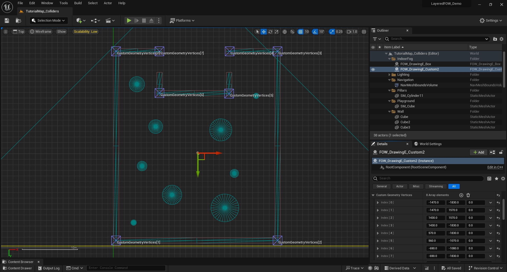

Contents
Documentation built with Unreal-Doc v1.0.9 tool by PsichiX
#Book
This book covers explanation of the Layered Fog Of War architecture. You will find implementation example, code explanation and how to make the best use of the FOW. This plugin is easy to use but might become painfull to understand when you need better performance from it
Pages
Documentation built with Unreal-Doc v1.0.9 tool by PsichiX
Getting Started
Table of Contents
The Fog Of War is Only a Texture
To understand the technology, you have to see the FOW as a texture:
By using a texture, it should be possible to create games with a "flat" map. Gameplay areas can't be superimposed, or you will discover undesirable parts of it. However, with multiple layers and by applying transparency, we can get through this problem.
Quick definition: A fog of war is a common game mechanic used in strategy and real-time strategy (RTS) games to simulate uncertainty and limited visibility. It obscures parts of the game map that are not currently within the player's line of sight or knowledge, typically represented by a shroud or darkness.
A FOW is just a set of data represented as a texture, which allows the computer to hide some part of the rendered frame from the player during the post-process pass. It will project the position of the rendered pixel onto a plane delimiting the FOW. The projection will then query the state of the fog texture to know if the player has sight on this pixel. It's a simple process of flattening all the assets onto a plane.
The texture generation is done by elements called "Drawers"; they will compute a texture fragment of what they see. Drawers can draw any shape to reveal an area. There are two different usages:
- Drawing circles which reveal everything around the player.
- Casting the collision geometry shadow to simulate the sight of the player.
Once every fragment is generated, they will be merged under the fog texture to be rendered.
Features
High Definition, Big Map
1. Intro
The Fog of War algorithms are simple in theory but heavy to update. To have a decent frame rate, you have to downgrade the texture precision to reduce the rasterization time of the drawers, the texture update on the GPU, or the GPU texture sampling time. The fog update being heavy was also an obstacle for game development. Maps had to be small for a high fog definition, or the definition had to be low for huge maps. I've wanted to prevent that and let everyone choose any precision without any repercussions.
2. Handler, Floor, Tile, Sample
The Fog Of War is split into floors representing parts of your level. You can have as many as you want, and you can juxtapose or even superpose them to give verticality. Every floor shares the same settings given from the handler and will have the same precision. They are also divided into tiles and snapped to a grid to simplify the merge and update process time. The FOW can have up to 8 visibility channels to represent fog. Only 2 channels are used in the given version to represent 3 states of fog:
- Seen: The player came earlier and is aware of the layout of the area.
- Visible: The player directly sees the area.
- Unseen: The player has never seen this area (meaning both of the channels are equal to 0).
It's up to you to find more usages of the 6 other channels. You can also use only one channel to make MOBA-like games where the map is fully visible.
3. Optimization for Large-Scale Projects
To overcome the update time, the FOW uses samples of fog to send to the GPU and uses binary compression of everything related to a texture. They are compressed such as 1 bit = 1 pixel. Doing so reduces the memory usage but also the pixel processing time by doing bitwise operations. Most of the update work is related to merging two textures, which means applying an "OR" operator between two textures. Since all the pixels are packed and our computer can use registers up to 512 bits, the FOW can also compute up to 512 pixels in one operation.
4. Architecture Repercussion
To allow the best usage of binary operation, channels had to be separated and can be seen as N different textures. Simplified representation of the texture
Normal texture: -> FOW texture:
RGBA, RGBA, RGBA -> RRR, GGG, BBB, AAA
RGBA, RGBA, RGBA -> RRR, GGG, BBB, AAA
RGBA, RGBA, RGBA -> RRR, GGG, BBB, AAA
Tons of AI
1. Intro
Projects using FOW are mostly games using lots of AI. It was one of the main objectives, being able to simulate thousands of units drawing fog. This plugin had to be ready for games like "Among Us" but also for RTS or MOBA like "Age Of Empires" or "League Of Legends." Once more, performance was the issue and had to be solved without impacting the precision or the map scaling.
2. Drawer, SharedDrawer, Entity, Rasterizer
Each player has a number of units represented in the game. Those units help him to navigate, discover, and fulfill the objective of the game. To discover the layout of the game, the FOW will use Drawers. Those drawers are components registered into the FOW, which will generate a fragment of fog represented as a bit array. This fragment is the representation of the sight of the owning actor. It can draw any shape and will provide its fragment during the floor update to generate the Fog Texture. However, merging thousand fragments is really inappropriate. It uses lots of memory, memory isn't aligned, lots of CPU cache is requested, and it doesn't respect patterns that accelerate computation. To ameliorate the process, the FOW follows the Data-Oriented Design (DOD) and allows developers to use Entities instead of drawers. Entities are the representation of an object in the game and will provide data to a "SharedDrawer," which will be able to update all registered entities during a single update.
To generate a fog fragment, every drawer has a reference to a rasterizer. Drawers are data containers designed to generate geometry that can be given to them. They are simple pieces of code that can be overridden for specific usage. In the current state, two rasterizers are provided:
- UFOW_R_TriangledGeometryV1, made to draw convex geometry from a set of vertices
- UFOW_R_CircleV1, made to draw a circle from one vertex
3. Optimization for Large-Scale Projects
To fasten the fragment generation process, the FOW packs data and follows DOD architecture.It takes profit of multithreaded processors by doing asynchronous updates and allows the FOW to make discrete updates which don't interfere with the game thread. In case of heavy updates, the FOW can be computed in many Engine frames to prevent game freeze.
The DOD and task system are an entry point to the GPU computation. Everything has been thought to make it possible and might be developed in the near future.
Vertical games
Introduction
It has been a challenge to allow everyone to create vertical top-down games. I took part in the development of "Alien Dark Descent," and it has been tough to implement ladders and stairs. However, the FOW couldn't dissociate the bottom from the top. So it was impossible to let the player discover the ground level and then discover the basement without a level transition. As explained a bit earlier, the Layered FOW is made out of floors that can be set up anywhere in the game. They will generate fog in the provided area, and drawers will remove it. Nothing is required from the user to make verticality!
GPU data transfer
Because of the GPU being the GPU, it was tough to go the simple way and send N textures representing the fog of floors. Plus, the update would have been super heavy. It was necessary to find a workaround to send data of each floor. The problem has been solved by packing floor fog samples into one texture; sample sizes are determined by the intersection of the camera frustum and the floor fog plane. However, a bigger texture will be required to update every floor.
To render correctly superposed floors, the material has to project and find the closest floors to query the fog state.
Networking
Introduction
Most of the top-down games we play are competitive or cooperative, which means that the game needs networking. On that behalf, the FOW has minimal Replication implementation. It's based on the fact that every player runs the same simulation, which means that every client actor has the same position as the server. If this is correct, there is no need to replicate the state of the FOG through the network; the only thing to synchronize is which drawer draws for which team.
FogStateReplication Client/Server
FogStateReplication is responsible for the synchronization between the client and the server. It's responsible for fog synchronization; the server is able to send the FOW state to any client for game initialization. And will provide a team ID to every client. This ID is used in each game instance to enable/disable drawers with the same ID. Once the state and IDs synchronize, nothing else will go through the network regarding the FOW.
Replication and Team limitation
To allow FOW state replication, the server has to be aware of the state of each team. It means that a game using 2 channels to represent "Seen" and "Visible" state can only have up to 4 teams. I've talked about it a bit earlier; the FOW can use at the maximum 8 channels. The replication becomes not only a limitation for games by limiting the team number, but also a performance limitation. The server user will have to constantly compute the fog of each team even if only 1 team is displayed. Clients don't have this performance issue since they will update only the attributed team.
Nevertheless, there is a workaround to palliate this limitation. It's possible to tell the server to compute only the user team. The network will still work, but the FOW state won't be able to be synchronized in case of late connection. One more thing to understand is that synchronization is useful only for a certain type of fog. The client doesn't need any synchronization if the game uses the Visible channel. Once every Drawers will be synchronized with the correct team, they will remove fog at their location to reproduce the state on the server.
To summarize, you can replicate the FOG state but you will have a team limitation depending on the number of channels used per team. If you don't enable this replication and let the server compute the fog from its player ID you can have as much team as you want!
Developer playground
Introduction
This part is a bit more personal. I've wanted my plugin to be modular, with replaceable parts. I'm always thinking that a better version exists which brings the necessity to slice my code and make it overridable. It even became a pattern for me, making small modules and preventing to the maximum dependencies. On that behalf, the plugin has many settings variables representing object classes to replace the provided ones.
I'm calling it a playground because it can be really simple modification to test a C++ functionality. There are lots of modules that are containers where you can try to switch an array for a map, or where you can add an acceleration structure to help the query function. As an example, I've made a naive collision system testing collision with every registered collider, but I've also made another one using an AABB tree to query the colliders in bounds.
This is Where the Fun Begins!
I'll try to provide everything to let you replace the module and play with the code in the source files. Here is the list of the modules and their working field:
-
UFOW_Rasterizer: You can challenge yourself to find the fastest way to draw a triangle. You can also work on specific rasterizers specific to draw geometry from formulas (Cone, torus, rectangle ...)
-
UFOW_CollisionHandler: Key stone of the drawers computation time when casting collision shadow. Accelerate the collider querying with structure (AABB tree, Spatial hashing, octree ...)
-
UFOW_OcclusionBuffer: Occlusion system for the CollisionHandler to ignore collider. R&D around the occlusion, the default one use 1D depth buffer
-
TFOW_Tile_Base: Merge the drawer fog fragment. You can play with SIMD instruction and find a faster way to merge everything
-
UFOW_DrawerComponent: Implement your custom drawer. You can play with tasks and multithreading
-
UFOW_SaveLoad: Generate a TArray
to be written in a file. You can play with pointers and compression -
AFOW_FogStateReplication: If you need to adapt the network to your pipeline
-
AFOW_Handler: If you need to adapt the loading or update pipeline
-
UFOW_Floor: If you need to adapt the update pipeline
Conclusions
Everything works correctly by default; however, you might need to tweak a few settings and have a good understanding of how the entities work for games with lots of AI. You can make extremely vast games without vertical limits. A simple replication implementation is already done allowing you to make online games. If you are curious you're more than welcome to replace everything !!!! :)
Documentation built with Unreal-Doc v1.0.9 tool by PsichiX
Architecture
This section will explain in-depth how the Fog Of War has been thought out. It'll give you the keys to tweak everything and set up the plugin to fit your game the best possible way.
Keep in mind that the Layered FOW doesn't need any modification to be used in game; only if performances are an issue, modifications will be necessary.
Everything is Tile-shaped
To allow high precision and large scale game, everything has been cut into pieces which can be seen as tiles. This tiling system is really efficient for optimization and multithreading. The FOW is designed this way:
- FOWHandler: the biggest piece holding every data. It's a singleton, and only one instance can exist in the level.
- FOWFloors: 3D boxes held by the Handler, where the fog will be applied. There is no number or position limitation. It will store a bits array of the fog state and everything necessary to generate fog fragment.
- FOWTiles: Defined by a power of 2 of fog pixels, it will create a grid for every element interacting with the fog. Used to merge fog fragment to the result texture in the Floors.
- FOWTextureSample: The bond between CPU and GPU, it will collect Floors bit array to send it to the GPU via a texture.
The logic is managed by Entities
The Entities are a suite of interfaces allowing data generation or querying. They are self-dependent and don't need any update, no API is provided unless two methods to enable/disable the entity. The FOW will do all the updates it needs to correctly generate the fog state of the frame. Entities exist in 3 different forms inheriting from a base interface, plus one a bit different, designed for a late purpose:
- CollisionEntity: Provide methods to gather collision from an object. Collisions are used by the drawers to cast shadow. The entity will be stored in CollisionHandler.
- DrawingEntity: Provide methods to collect drawing settings from an object. The entity will be registered to shared drawer to generate fog fragment.
- VisibilityEntity: Provide methods to collect object size and location to update its visible state depending on the fog.
- GeometryEntity: It doesn't derive from the Entity base class; its purpose is to hold geometry data to be used by entities (calling it GeometryEntity was a mistake).
Pages
Documentation built with Unreal-Doc v1.0.9 tool by PsichiX
Handler
Table of contents
Explanation
AFOW_Handler is a singleton used to store Floors
and used to change the Fog settings (Pixel size, Encoding, Collision system ...). It defines
the initialisation and the update loop. All initialisation happens during the begin play unless
for the floor generation that is instantiated straight into the editor.
Settings
Editor debug setting
ShowGrid: display the grid delimited by the tile. Floors are snapped to this grid.ShowFloors: display the 3D box representing the floors. The pink square is the real position of the floor, it will be aligned to the grid. The yellow square is the 3D Fog representation.
Fog setting
PixelSizelet you adapte the fog precision, the value is expresse in centimeterFOWFloorslet you create new game area with fogTilePixelNumberlet you change the tile dimension by modifying their pixel number. Changing tile size might become interesting for high fog precision, it will reduce the number of tile merging and will allow the usage of bigger register for the merging.ChannelToClearAtStartlet you choose the default fog status at start. Useful if you have a map with hidden area and the rest visible. UseAFOW_DrawingE_CustomwithUFOW_FloorStartUpLayerto add fog where it's needed. Fog will be cleared and re-draw during the initialisation and the very first frame.LayerHandler_Classlet the possibility to the user to organise the layer merging.FOWFloorTiles_Classlet you choose the number of channel used by the game. It is also designed to select the computation methode of tile merging. Warning register used cannot be bigger thanTilePixelNumber
Update settings
FOWComputeSettingChange the right of the FOW to use or not multithreading/Task/ComputeShader (compute shader not done yet).FOWUpdateRateChange the update rate of the FOW. However I do not recommend to use it, render will be impacted and become less smooth. I recommand to enable task and let the FOW do discrete updates.
Module settings
Modules that can be changed in the handler are stored under the Settings|Class section. There is
a differentiation between static and dynamic because some modules can be more or less optimized
depending on those two parameters (The AABBCollisionHandler has an update time super long for dynamic objects).
Rendering settings
FOWShader_Classchange the render system of the FOW. 3 different materials are provided with the plugin:MPP_FOW_Floors: for flat gameMPP_FOW_FloorsTransparency: for games with verticalityMUI_FOW_Minimap: for the minimap
Initialisation
The initialisation of the FOW happens in the begin play and can be delayed if your pipeline needs it. Initialization is split into many sections:
InitNetworkwill create a Replicated environment only if the game isn't standalone and if the layer setting class is correctly set. Set network setting as the right to override many values from the Handler to provide the accessibility to different clients. Thus it has to be executed first.InitTeamsisn't used and will be deleted.- `InitFOWFloorsTiles" Allocates the memory used by the floor. The FOW cannot do anything without it. The tiles must be initialized before the game shader.
InitGameShaderGeneratesFOWTextureSamplethat will be linked to the instantiatedFOWShader_Class. You can override this to generate more material if needed. However, you have the possibility to create and register texture sample at any time; don't force yourself to do everything in this method.InitFOWUpdateis the most interesting method. If you have pipeline trouble, I recommend to let every other initialization call and to delay only this one. Until this call is made, no update from the fog but even from this entity or the collision system will happen. Please be very cautious to callFinalizeInitializationjust after the call of this method.
Visual representation of the initialisation pipeline

Updates
By default, the update happens during the actor tick. Every component of the FOW will be updated during
this sequence unless for the FOWTextureSample. The update will be done at once if no asynchronous
tasks are requested and will be managed by two methods:
FOWUpdate_Beginmanages every update that needs to happen to let drawers generate fog fragment. It'll update the dynamic Entities first and then the collision. It will also be responsible for multithreading initialization.FOWUpdate_Endis called after that the drawers have generated their fog fragment. Depending on the usage of task or compute shader, it'll be called right after the begin update or later in the frame. Fog fragment will be sorted and distributed to floors to update the fog state. Once updated transient drawer will be deleted and all "visibleEntity" will update their state to turn on/off their render.
The FOWTextureSample has a special place to be updated because of the engine camera update time. To generate
fog sample the sample has to be aware of the position of the camera; however, Unreal updates their position at
the end of the tick. To prevent sample from sending wrong texture information, their updates happen at the very
end of the world tick. There is a second reason of why their update is separated and independent. In case
of long update, the FOW can skip an update frame if using asynchronous update. It doesn't impact the render
to not change the fog state, however, fog data on the GPU has to be perfectly synchronized with game or
artifacts might show up.
Visual representation of the Updates pipeline

Documentation built with Unreal-Doc v1.0.9 tool by PsichiX
Floor
Table of Contents
Explanation
AFOW_Floor represents 3D boxes held by the Handler, where the fog
is applied. The fog is stored in a "bit array" that is updated and sampled every frame. The update is
facilitated by the TFOW_Tile_Base, which shares the bit array pointer to allow
multithreading and prevent unnecessary updates if no Drawer fragment has updated the tile area. Floors
contain all the entities within them, registered in:
UFOW_Drawer_SharedforIFOW_DrawingEntity_Interface, with the base class defined inFOW_LayerSettingUFOW_CollisionHandler(static/dynamic) forIFOW_CollisionEntity_Interface, with the base class defined inAFOW_HandlerUFOW_EntityVisibilityHandler(static/dynamic) forUFOW_VisibilityEntity_Interface, with the base class defined inAFOW_Handler
Settings
You'll find a few settings to configure the floors in your environment:
FloorLocation: defines the center of the floor.FloorExtend: defines the 2D extent of the floor.FloorZExtend: Represents the height of the fog. X represents the fog under the floor center, and Y represents the fog above the floor center.bOverrideChannelToClearAtStart: Allows you to override theFOW_Handlersetting of the fog state at start.bSnapFloorExtendToGrid: Snaps the floor extent to the tile grid.
Fog Update
Every update is called by the handler, with four main updates:
UpdateCollision: done duringFOWUpdate_Beginby theUFOW_CollisionHandlerUpdateFogState: done duringFOWUpdate_EndUpdateVisibleEntityState: done duringFOWUpdate_Endby theUFOW_EntityVisibilityHandlerUpdateFogTextureSampleorGetFogTextureSampleRegions: done duringUpdateTexture. This update is special and cannot be changed; it's bound toFWorldDelegates::OnWorldTickEndto ensure the position of every game camera.
The fog state is a heavy update which merges fog fragments of every Drawer. To achieve this, both the
fragment and the floor's bit array are sliced into tiles. They are instantiated and stored in
floors, all deriving from TFOW_Tile_Base. This facilitates the transformation
of Drawer data into a readable texture from the GPU. Each tile receives arrays of pointers linked to
Drawer fog fragments; if the array is empty, the tile is skipped and reset if updated during the
previous frame. The fog state is generated depending on the UFOW_LayerSetting
bound to the Drawer and supervised by the UFOW_LayerHandler, which provides the
update order. The LayerSettings are non-instantiated classes that convert all their Settings into
a flag. They are read by the Tiles and interpreted as the code writer intends. Every modification
regarding channel behavior or computation will require another Tile class.
Visual Representation of the Updates Pipeline

Documentation built with Unreal-Doc v1.0.9 tool by PsichiX
Tutorials
Here we will showcase step-by-step process of basic usage of the Layered Fog Of War - both for C++ and Blueprint implementation.
If you want to be in the same condition as the picture are, you can download my Demo Project and use the map in the tutorial folder.
If you need help to install the plugin, you watch this Video
Pages
Documentation built with Unreal-Doc v1.0.9 tool by PsichiX
First set up
Table of Contents
Installation
Download the Demo project Here
Install the plugin in the project, helping video Here
Set up the fog
This part will explain how to use the Fog Of War in the easiest and fastest possible way !
Drag and drop a BP_FOWHandler from the quickly add button, keyboard is enable to allow you fast search

Once in your scene you will see two box:
- Yellow one, representing the Fog in 3D
- Pink one, representing the fog align to the tile grid

Add a FOW_Drawer_FOV to the BP_TutorialCharacter

Hit the play button for the first preview of the FOW !!

Now that the FOW is running were gonna add collision to limite the sight of character.
Add FOW_CollisionEntity_BoxComponent to the four wall in the map

You will have to reset the scale of the box collision to 1 to make them fit to the asset

Box are cool but might be a bit limited, let's see how to do otherwise
Add FOW_CollisionEntity_CustomComponent to the cylinder in the map.
In the details panel, select the component and Add 8 vertices to the CustomGeometryVertices array.
Position the vertices in top view such as they fit to the object, grid snapping might by annoying.

You can hit the play button again and see that the cylinder collision is projected!

Going furter
If you are setting up the FOW for custom map you can change the size and position of the floor in BP_FOWHandler in the details panel. You can also add other floors to extend your game however you want. check the Floor page for more information to set up the fog in your level.

The base radius of the FOW_Drawer_FOV component might be too small, don't hesitate to change it
in the actor holding the component. Modify the DrawerRadius value to provide a larger sight to your units.

You can change the fog precision of the FOW in the BP_FOW_Handler by going in the details panel
and by changing the PixelSize value. By default the fog pixel is set to 25 centimeters

Documentation built with Unreal-Doc v1.0.9 tool by PsichiX
Fog of war Entities
Entities system are used by default as a solution to memory fragmentation causing heavy update.
It has been designed with this fact in mind but also to let anything be part of the FOW. Entities
are collected and stored under containers to keep requiered data for the system update. They
inherite from UFOW_Entity_Interface which is a UInterface. I'm using the unreal interface
implementation to allow callable functions for Blueprint only users. The downside of it is that
entities has to be at least a UObject.
The Entities can be implemented only in the C++ side, However many predifined Actor and
ActorComponent are providen with already implemented interface. You will find in
those derived class two function allowing you to EnableEntity() or DisableEntity() anywhere
at anytime. There is no other API, they are self suffisante and their update are managed by
the containers.
Pages
Documentation built with Unreal-Doc v1.0.9 tool by PsichiX
Visibility entity
This tutorial has been realised in the Tutorial/Maps/TutorialMap_Entities map providen in the
Demo Project
Visibility Entity Component
This component implement IFOW_VisibilityEntity_Interface and allow your game to change the
visibility of your actors depending of the fog state.

To use it add a FOW_VisibilityEntity_Component to an instanced actor or to your existing Blueprint.
the component will by default hide the actor if not in sight.

To go a bit further, if you whant to apply custom code when the visibility state change, you can implement
the OnVisibilityChanged event from the component in your Blueprint.

By default the FOW state is return as a uint8, it doesn't means a lot for you but it is a mask representing
the 8 chanels. You can transform it to a more readable enum by calling GetFOWStateFromBits. Now just
switch on the returned enum to apply your custom code. For the example I'm juste drawing debug sphere.

And here you go, green sphere appear when the actor is reveald, and a red one appear when the player loose sight on it.

If the popping render displease you, you can turn it off by unchecking DisableRenderOutSight. if you do
so nothing will happen anymore and you will have to do the magic by yourself, material translusency transition
or an explosion maybe ? :)

Visibility Entity cpp implementation
You can make your own visibility component or directly turn your UObject to entities and give them
the possibility to react to the Fog state. To be done ...
Documentation built with Unreal-Doc v1.0.9 tool by PsichiX
Drawing entity
This tutorial has been realised in the Tutorial/Maps/TutorialMap_Entities map providen in the
Demo Project
Drawing Entity Components
There is Multiple DrawingEntity component implementing the IFOW_DrawingEntity_Interface, three different
kind of them exist for now.
Geometry drawers, they will pierce fog by rasterzing a given geometry. used byFOW_DrawingEntity_BoxComponentCircle drawers, they will pierce fog with specific rasterizer only able to trace circle. used byFOW_DrawingEntity_CircleComponentFOV drawers, they will pierce fog by collecting the colliders to create shadow geometries. used byFOW_DrawingEntity_FOVComponent
All DrawingEntity work the same, they hold data and the given UFOW_LayerSetting will define
how this data will be used to pierce the Fog.

To use them add a FOW_DrawingEntity_CircleComponent / FOW_DrawingEntity_BoxComponent / FOW_DrawingEntity_FOVComponent
to an instanced actor or to your existing Blueprint. the Default settings of those component are made to pierce the fog.

All drawers will have barelly the same settings.
IsEnableAtStart, define if the entity start drawing from the BeginPlay or if it will be enable later by callingEnableEntity()TeamIndexAtStart, define for which team will the entity be drawing for. The team can be changed at runtime by callingSetEntityTeam()Static/DynamicLayerSettingClass, define how the drawer will bring modification to the fog. Those can't be changed at runtime.- The advanced section is only necessary for multiple
FOW_Floorgames. There behavior will be explain later.

Drawing Entity cpp implementation
You can make your own drawing component or directly turn your UObject to entities and give them
the possibility to alter the state of the fog. To be done ...
Documentation built with Unreal-Doc v1.0.9 tool by PsichiX
Collision entity
This tutorial has been realised in the Tutorial/Maps/TutorialMap_Entities map providen in the
Demo Project
Collision Entity Component
There is Multiple CollisionEntity component implementing the IFOW_CollisionEntity_Interface.
All collision work the same, they store a geometry that will be given to a UFOW_CollisionHandler.
The handler will then profide query class to collect colliders informations.
The geometry can be convex and concave, it's only requiered to correctly sort the vertices.

To use them add a FOW_CollisionEntity_BoxComponent or FOW_CollisionEntity_CustomComponent
to an instanced actor or to your existing Blueprint. I use for the example the box component,
if you wanna use the custom component to generate custom collision you will have to provide vertices.

Select the FOW_CollisionEntity_BoxComponent and reset the scale to 1.

If you take a look to the collision entity settings you will see that Static/DynamicLayerSettingClass are requiered.
It's the case because colliders are also DrawingEntities. If ShouldBeDrawn is check and if the
UFOW_LayerHandler is correctly set colliders will provide their geometries to a UFOW_Drawer_Shared.
It's present as an optimisation for maps with a lots of FOVDrawers or FOVEntities, it'll allow the
FOW to rasterize the colliders geometry into a static layer which will reduce the triangle count per geometry
for dynamic drawing.

Hit the play button and see the shape of the collision blocking the sight of the drawer.
Collision Entity cpp implementation
You can make your own collision component or directly turn your UObject to entities and give them
the possibility to block the sight of drawers. To be done ...
Documentation built with Unreal-Doc v1.0.9 tool by PsichiX
Layers
Basic
This part will show explain you how LayerSettings works and how you can create new ones for your games.
First you have to know that they are dissociated to provide different information to the FOW but also to
profide a computation order during the fog fragment merging. It can be compered to a rendering pipeline.
To register a new layer you will have to create a LayerHandler.
Let's try to change the behavior of the drawer on you character. We want him to reveal only the black fog
but not to give him sight.
Create a new BP_MyLayerHandler derived from FOW_LayerHandler
Create a new BP_MyFOVLayer derived from FOW_LayerSettings

Open your layer handler and add the new layer you've juste created. Add id just under the FOW_FOVLayer

Now we need to tell the FOW_Handler that we are using a new layer pipeline. Select the BP_FOW_Handler
and change in the detail panel, in the class section, the value of the LayerHandlerClass to the one you've
created
Open the blueprint holding the FOVDrawer, select it and go to the detail panel. scroll to the LayerSettingClass
and replace it with the one you've created
Now that every thing is correctly set, we can change the behavior of the LayerSetting. Open the blueprint,
turn the InverseBits to true (I'm gonna ask you to trust me on that, every FOV Layers will need this to be true)
and set the RevealSight to false and RevealFog to true. Doing so will prevent the player to have sight on
VisibilityEntity however the layout will be revealed
Enjoy your new layer setting ! Check out the Visibility Entity page to really understand the difference
between RevealSight and RevealFog.

Advanced
Let's talk about other settings and let's try to implement different Drawers and Entity to your game !
To continue ...
Documentation built with Unreal-Doc v1.0.9 tool by PsichiX
Outdoor Indoor
Depending of the game you might need to dessociate the Indoor from the outdoor, such as only the indoors are undiscoverred. From my experience it's easier to clear the whole FOW and add fog to the indoor area. The next picture represent the result we will have step by step:
-
- FOW display without any setup
-
- FOW display when revealing the whole fog
-
- FOW display after adding the indoor fog

First get the BP_FOW_Handler and go to the detail panel. Find the ChannelToClearAtStart
and check the chan2 box. It while set the default value of the second channel of every floor
to 1 to clear the black fog.

Now we're gonna draw back the fog in the 2 indoor area. There is two type of drawing entity provided to do so:
FOW_DrawingEntity_Box, drawing fog in a boxFOW_DrawingEntity_Custom, drawing fog in the providen custom geometry
Drag and drop both of the drawing entity to your scene and let's set up the indoor fog.
First move the FOW_DrawingEntity_Box to the tiny room and scale it to be as big as the room

Second move the FOW_DrawingEntity_Custom to the bigger room and add 8 vertices int the
CustomGeometryVertices in the details panel. Select the top view for the viewport and
place the vertices arround the room.

Finally, By default Drawers will remove fog, however this time we need to add fog and only
when the game start. A specific LayerSettings is providden to do so. In both drawing
entities, in the details panel, replace the static and dynamic layer setting class by
FOW_FloorStartUpLayer.
Documentation built with Unreal-Doc v1.0.9 tool by PsichiX
Networking
/!\ This tutorial is made to show how the FOW works with networks, replication knowledge won't be providen. Networking
GameMode,GameState,ControllerandCharacterare providen. You have obsolutly the right to read, copy and use any code you find :)
This tutorial has been realised in the Tutorial/Maps/TutorialMap_Networking map providen in the Demo Project
Default replication setup
The TutorialMap_Networking has been set up to show you how replication and teams works. To do
so a BP_TutoralNetworking_GameMode has been set up with a BP_TutorialNetworking_PlayerController
to spawn a BP_TutorialNetworking_Character at a PlayerStartlocation depending of the Client team.
To visualize the replication the server will clear the fog of an another spawn point for each team
before the client connection.
- The circle represent the spawn point
- The square is the associated revealed spawn point

There is a little trouble with Unreal and singleton instance when they are stored in a static variable.
If you hit the play button with multiple player in the editor, multiple world will be created but inside the
same application, wich means static variable are shared and overriden. To prevent this the FOW is designed to
look for an implementation of FOW_GetHandlerInstance_Interface in the GameState.
Let's setup the game state. Create a new My_FOWNetworking_GameState derived from GameStateBase

Open it and go into ClassSettings to add the FOW_GetHandlerInstance_Interface in the ImplementedInterfaces
array.

Now you have to provide the code to the Find_Level_FOWHandler.
- Add a
FOW_Handlervariable - Get the variable and convert it to a
Validateget, if valide return the variable. - Else find all actor of class
FOW_Handler - If at least one is retruned, set your
FOW_Handlervariable to the first element of the array - Return the variable

Now open the BP_TutoralNetworking_GameMode and replace the GameState with yours

All set up !
Note that if you don't simulate the network in the editor this whole setting isn't needed, as long as every game instance are separated process you don't need to implemente the interface.
Now let's see how the FOW works with replication. First create a new BP_MyNetworkSettings
derived from UFOW_NetworkSettings.

Open it and change the NetworkGameMaxTeamNbr value from the Server to 4. It means
that the FOW_Handler will be ready to handle 4 different teams drawing fog seperatly.
(for few reason 4 team with two channels enable is the maximum). Also if you pay attention
the client is set to only one team, which mean that only the client team fog will be updated.
Under those settings you will find check box to allow or not replication and which channel are replicated.
The first channel isn't needed since it represent the fog of what drawers currently see.

Select the BP_FOW_Handler, get into the details panel and change the NetworkSettingsClass to
your BP_MyNetworkSettings.

Before hitting the play button change the PlaySettings. Change the number of players to 4
and change NetMode to PlayAsListenServer.

Now you can hit the play button and see the 4 windows open which your character connecting one by one.
If you do not understand what the fog replication change, go back to your BP_MyNetworkSettings and
uncheck bIsFogStateReplicated.

Manage player team
The previous part was about to setup the network over the FOW. However you couldn't do anything regarding which client are associated to which team because of the default system distributing the players to each team.
Let's see how to do that. Create a BP_MyFogStateReplication_Server derived from AFOW_FogStateReplication_Server.

Open it and override the GetClientTeamIndex function.

Open it. This is where you can manage the client team association. the PlayerController is providen,
You should be able to fetch necessary data from your game with it.
For the example let's just do this:
- Get the
NetworkMaxTeamNbrand substract 1 from it - Pin the result to a
Radom Integer in Range - Pin the result to the return;

Now that the server is set up, open your BP_MyNetworkSettings and replace the FogStateReplicationClass
by your BP_MyFogStateReplication_Server.

Hit the Play button and see the player beeing associated to a random team !
Infinit team
In case you want more than 4 team with two channel you can just uncheck bIsFogStateReplicated,
Set the NetworkGameMaxTeamNbr for both client and server to 1 and provide any team index you
want in the GetClientTeamIndex override.
This replicated team number issue will be taken care of, it might not allow infinit number but more than 4 for sure

Documentation built with Unreal-Doc v1.0.9 tool by PsichiX
Fog Channels
This tutorial is based on solo game, every things related to channels need to be taken with cautious when applied to teams. However everythings works the same, teams will only limite the number of availlable channels.
Basic
The FOW has up to 8 configurable channels that you can use.(Be carefull with game having teams) The channels may or may not be all used, for the default setup of the FOW only two channels are used:
- First channel define what the player currently see.
- Second channel define what the player has seen;
This set up is mostly used for narative game or RTS with procedural maps but you might want to make a game more MOBA oriented with everything reveald to the players, which means that you only need the first channel to represent the sight of the player.
Let's change the FOW to have only one channel. First select the BP_FOW_Handler get to details panel
and click on the FOWFloorTilesClass input field and select TFOW_T128b_1Chan_Pck_Class.

Still in the BP_FOW_Handler details panel, find the FOWShaderClass variable and open the providen
material, it should be MPP_FOW_Floors.

Find the material function with 8 channel output pin and unlink the chan2 from the linked lerp node.
The Alpha value should be set to 1.
You should be done, press play and check that the FOW correctly display only one channel.

You might have figured out that only doing the material part would have do the tricks and yes it would
have. But you would have let the FOW doing all the computation in CPU and GPU of the Chan2.
Advanced
In the advanced part I'll show you how to implement and use more than 2 channels by creating new FOW_Tile_Class
and FOW_LayerSetting. To be done ...
Documentation built with Unreal-Doc v1.0.9 tool by PsichiX
Floor and verticality
Hello
Documentation built with Unreal-Doc v1.0.9 tool by PsichiX
Minimap
Documentation built with Unreal-Doc v1.0.9 tool by PsichiX
C++ API Reference
Classes
AFOW_HandlerIFOW_CollisionEntity_InterfaceIFOW_DrawingEntity_InterfaceIFOW_Entity_InterfaceIFOW_GeometryEntity_InterfaceIFOW_VisibilityEntity_InterfaceUFOW_CollisionHandlerUFOW_DrawerComponentUFOW_Drawer_SharedUFOW_EntityContainerUFOW_EntityVisibilityHandlerUFOW_FloorUFOW_LayerHandlerUFOW_LayerSettingUFOW_RasterizerUFOW_TextureSampleUFOW_Tile_ClassUFOW_VisibilityE_Component
Documentation built with Unreal-Doc v1.0.9 tool by PsichiX
Classes
AFOW_HandlerIFOW_CollisionEntity_InterfaceIFOW_DrawingEntity_InterfaceIFOW_Entity_InterfaceIFOW_GeometryEntity_InterfaceIFOW_VisibilityEntity_InterfaceUFOW_CollisionHandlerUFOW_DrawerComponentUFOW_Drawer_SharedUFOW_EntityContainerUFOW_EntityVisibilityHandlerUFOW_FloorUFOW_LayerHandlerUFOW_LayerSettingUFOW_RasterizerUFOW_TextureSampleUFOW_Tile_ClassUFOW_VisibilityE_Component
Documentation built with Unreal-Doc v1.0.9 tool by PsichiX
Class: AFOW_Handler
class FOGOFWAR_API AFOW_Handler
: public AActor;
Reflection-enabled
Specifiers:
- abstract
The Fog Of War Handler is the base class of the plugin, it's a sigleton and you cannot have many instance of it even when doing networked game with replication
The Fog Of War is highly parametrable and let the developers override almost everything. You might want to get ride of some functionality or maybe to write a more optimized code
The handler hasn't any main logic, it's purpose is to:
- Have general settings
- Initialise FOW Object
- Run the update
- Contain FOW element instancies
You have the possibility to change the core module of the FOW by changing the default class used int the settings
- If you want a custom FOWHandler be sure to override FindLevelFOWHandler, you can use
AFOW_Handler_Defaultas example- Go to the FOWFloors settings and display the parametters to shape the floor to your needs
If you need to modify the initialization to fit your pipeline, override those function called by the BeginPlay
- void InitNetwork();
- void InitTeams();
- void InitFOWFloors();
- void InitFOWFloorsTiles();
- void InitGameShader();
- void InitFOWUpdate();
- void FinalizeInitialization(); Please be really carefull to not finalize the initialization if the floor or game shader init havn't be called
Documentation built with Unreal-Doc v1.0.9 tool by PsichiX
Class: IFOW_CollisionEntity_Interface
class FOGOFWAR_API IFOW_CollisionEntity_Interface
: public IFOW_Entity_Interface;
Collision entities are the sight blocker to prevent fog discovering between rooms.
By design any child implementing this class should also implement IFOW_DrawingEntity_Interface to enable optimisation
- Depending of the situation you can have issues because of collision drawing optimisation, Override ShouldDrawColliders and return false to disable it
- You can disable the whole collision drawing optimisation by disabling DrawFOWCollider in
UFOW_LayerHandler
Contained by : UFOW_CollisionHandler
For more information of the entity virtual fonction please see IFOW_Entity_Interface.
Documentation built with Unreal-Doc v1.0.9 tool by PsichiX
Class: IFOW_DrawingEntity_Interface
class FOGOFWAR_API IFOW_DrawingEntity_Interface
: public IFOW_Entity_Interface;
Drawing entity used to modify the state of the fog depending of the given UFOW_LayerSetting
- Override GetEntityLayerSetting to give the correct layer setting
- Call SetEntityTeam to change the entity team in case of multiplayer game
Contained by : UFOW_Drawer_Shared
For more information of the entity virtual fonction please see IFOW_Entity_Interface.
Documentation built with Unreal-Doc v1.0.9 tool by PsichiX
Class: IFOW_Entity_Interface
class FOGOFWAR_API IFOW_Entity_Interface;
Base class for every entity interface, IFOW_GeometryEntity_Interface is an exception subject to a retake
Entities are by default automatically updated by the system if (IsStatic == false && FloorVolatile)
- FloorVolatile express the posibility to move from a floor to another
Contained by : UFOW_EntityContainer
Warning : every multiple inheritance have specifique overriding rule regarding methodes finishing by _M.
You can use AFOW_CustomCollision as examble for your custom entity implementation
Documentation built with Unreal-Doc v1.0.9 tool by PsichiX
Class: IFOW_GeometryEntity_Interface
class FOGOFWAR_API IFOW_GeometryEntity_Interface;
Geometry entity is a data container used by entities to modify fog or create collision.
- Geometries are by default automatically updated by the system if (static == false || modular)
- Override UpdateEntityGeometry to make your modification
Contained by : UFOW_EntityContainer
Warning : The geometry system should be retaken to make the geometry aligned in memory
Documentation built with Unreal-Doc v1.0.9 tool by PsichiX
Class: IFOW_VisibilityEntity_Interface
class FOGOFWAR_API IFOW_VisibilityEntity_Interface
: public IFOW_Entity_Interface;
Visibility entity used to automatically update the ingame visibility of the UObject inherited from it
- VisibilityEntity are by default automatically updated
- Override OnVisibilityStateChanged to update the visibility state
- You can find a default example by looking at
UFOW_VisibilityComponent.
Contained by : UFOW_EntityVisibilityHandler
For more information of the entity virtual fonction please see IFOW_Entity_Interface.
Documentation built with Unreal-Doc v1.0.9 tool by PsichiX
Class: UFOW_CollisionHandler
class FOGOFWAR_API UFOW_CollisionHandler
: public UObject;
Reflection-enabled
Collision handler is used to accelerate the querying of collider to generate sight mask
Every handler is associated to its UFOW_CollisionHandlerQuery class
Contained by : UFOW_Floor
Documentation built with Unreal-Doc v1.0.9 tool by PsichiX
Class: UFOW_DrawerComponent
class FOGOFWAR_API UFOW_DrawerComponent
: public UActorComponent;
Reflection-enabled
Specifiers:
- Abstract
- Blueprintable
The drawer component compute fog modification, however it doesn't apply it.
They are small chunk of fog aligned to the world grid, they can be seen as canvas.
Their update are the slowest because of the collision querying and the geometry rasterization.
By default they are mean to be added to each actor modifying the fog however the memory allocation and merging can become very time consuming.
If your game needs higher performance take a look at IFOW_CollisionEntity_Interface which will request the creation of a UFOW_Drawer_Shared to the system.
It is possible to :
- Create custom drawer by inheriting from this class and by overriding GenerateDrawerGeometry to inject your custom geometry
- Change the rasterization process by creating a new
UFOW_Rasterizerand by changing the default class used in theUFOW_LayerSetting- Change the collision querying by creating a new
UFOW_CollisionHandlerand by changing the default class used in theAFOW_Handler
Contained by : AFOW_Handler
Properties
-
OnlyRegisterValideTeamprotected: bool OnlyRegisterValideTeam;
Reflection-enabled
Specifiers:
- BlueprintReadWrite
- EditAnywhere
- Category = Settings
To allow flexibility allow every drawer to be registered in the FOWHandler, it might slighly increase UpdateDrawerLayer parsing time But it will remove every network synchronisation issues if the client team change
Documentation built with Unreal-Doc v1.0.9 tool by PsichiX
Class: UFOW_Drawer_Shared
class FOGOFWAR_API UFOW_Drawer_Shared
: public UFOW_DrawerComponent;
Reflection-enabled
Specifiers:
- Blueprintable
- BlueprintType
Meta Specifiers:
- BlueprintSpawnableComponent
Drawer designed to hold IFOW_DrawingEntity_Interface and batch their update under one process
Contained by : AFOW_Handler
Documentation built with Unreal-Doc v1.0.9 tool by PsichiX
Class: UFOW_EntityContainer
class FOGOFWAR_API UFOW_EntityContainer
: public UObject;
Reflection-enabled
Specifiers:
- Abstract
- EditInlineNew
Dynamic entity and geometry container. Called by the AFOW_Handler to update their status
Contained by : AFOW_Handler
Documentation built with Unreal-Doc v1.0.9 tool by PsichiX
Class: UFOW_EntityVisibilityHandler
class FOGOFWAR_API UFOW_EntityVisibilityHandler
: public UObject;
Reflection-enabled
Update the visibility of every registered object implementing IFOW_VisibilityEntity_Interface.
The class is instantied twice in every UFOW_Floor for Static and dynamic entity.
Each entity will query the FOW state at location or for an AABB on the owner FOW_Floor.
- Change the visibility system by creating a new
UFOW_EntityVisibilityHandlerand by changing the default class used in theAFOW_Handler- Override OnVisibilityStateChanged methode in IFOW_VisibilityEntity_Interface to apply custom modification
- Bind your object to OnVisibilityChanged if you are using FOW_VisibilityComponent
Contained by : UFOW_Floor
Properties
-
VisibleEntitiesprotected: TArray<TScriptInterface<IFOW_VisibilityEntity_Interface>> VisibleEntities;
Reflection-enabled
Specifiers:
- BlueprintReadOnly
- Category = Internal
Hold the visible entity
Methods
-
PrepareForWorldDestructionpublic: virtual void PrepareForWorldDestruction();
Reflection-enabled
Specifiers:
- BlueprintCallable
- Category = Core
Call before the world destruction to prevent all Remove or Add operation
-
UpdateVisibilityStatepublic: virtual void UpdateVisibilityState( const UFOW_Floor* Floor, uint8 FOWGlobalSettingFlags );
Reflection-enabled
Specifiers:
- BlueprintCallable
- Category = Core
Update the visibility state of all registered entity
Arguments
-
Floorconst UFOW_Floor* Floor -
FOWGlobalSettingFlagsuint8 FOWGlobalSettingFlags
Documentation built with Unreal-Doc v1.0.9 tool by PsichiX
Class: UFOW_Floor
class FOGOFWAR_API UFOW_Floor
: public UObject;
Reflection-enabled
Specifiers:
- EditInlineNew
The floor is an area where a bit mask texture is generated to create fog.
Each floor bit mask will be sliced and attributed to a TFOW_Tile_Base.
It's responsible of the fog state update by querying the fog chunk of every drawer.
Every levels can have many instances of floor to allow verticallity for your game.
Each floor has a collision handler static and dynamic and is responsible for the collision update.
- Change the collision system by creating a new
UFOW_CollisionHandlerand by changing the default class used in theAFOW_Handler- Change the visibility system by creating a new
UFOW_EntityVisibilityHandlerand by changing the default class used in theAFOW_Handler
Contained by : AFOW_Handler
Warning : supperposed floor will work correctly only if you change the PP material in AFOW_Handler
Documentation built with Unreal-Doc v1.0.9 tool by PsichiX
Class: UFOW_LayerHandler
class FOGOFWAR_API UFOW_LayerHandler
: public UObject;
Reflection-enabled
Specifiers:
- Blueprintable
The layer handler allow you to change the computation order of the different UFOW_LayerSetting
- Layer will modify the fog state in the given order, which means that a modification can be overriden by an other layer
- Enable or disable the collision drawing optimisation by changing DrawFOWCollider
Documentation built with Unreal-Doc v1.0.9 tool by PsichiX
Class: UFOW_LayerSetting
class FOGOFWAR_API UFOW_LayerSetting
: public UObject;
Reflection-enabled
Specifiers:
- Abstract
- Blueprintable
Layer setting is made to configure how an entity or a drawing component will modify the fog
Documentation built with Unreal-Doc v1.0.9 tool by PsichiX
Class: UFOW_Rasterizer
class FOGOFWAR_API UFOW_Rasterizer
: public UObject;
Reflection-enabled
Specifiers:
- abstract
The rasterizer convert the geometries to a bit mask texture representing the state of the FOW.
The reasterizer is never instantied, the default object is always used witch means that you cannot use variable in the class
- Change the rasterization process by creating a new
UFOW_Rasterizerand by changing the default class used in theUFOW_LayerSetting
Documentation built with Unreal-Doc v1.0.9 tool by PsichiX
Class: UFOW_TextureSample
class FOGOFWAR_API UFOW_TextureSample
: public UObject;
Reflection-enabled
Specifiers:
- abstract
- Blueprintable
The texture sample collect sample of FOW from the UFOW_Floor to write it inside a texture that will be bind to materials
Contained by : AFOW_Handler
Documentation built with Unreal-Doc v1.0.9 tool by PsichiX
Class: UFOW_Tile_Class
class FOGOFWAR_API UFOW_Tile_Class
: public UObject;
Reflection-enabled
Specifiers:
- Abstract
TFOW_Tile_Base aren't a UCLASS to prevent saturation of GC, thus they are all wrapped by a FOW_Tile_Class and allocated the old way.
Tiles are used to compute fog result of the UFOW_DrawerComponent and merge it depending of the UFOW_LayerSetting under a bit array that will feed the UFOW_TextureSample sent to the GPU.
You can simply create your own tile update by overriding this class and by using the templated class TFOW_Tile.
you will have to create 3 templated classes to finish your fully custom tiles :
- Update
- Compute
- Merge
- Override GetTileBitsFormat to correctly set the tile pixel number for the FOW
- Override GetTileChannelNbr to correctly set the channels number per tiles
- Override GetTilePackagingFormat to correctly set the packaging format use by the FOW
Contained by : UFOW_Floor
Warning : I highly advise to use the EnumFOWTilePackagingFormat::PACKED format for optimisation reason
Documentation built with Unreal-Doc v1.0.9 tool by PsichiX
Class: UFOW_VisibilityE_Component
class FOGOFWAR_API UFOW_VisibilityE_Component
: public UActorComponent
, public IFOW_VisibilityEntity_Interface;
Reflection-enabled
Specifiers:
- ClassGroup = Entity
Meta Specifiers:
- BlueprintSpawnableComponent
- DisplayName = FOW_VisibilityEntityComponent
Can be added to any actor which need to be hidden when the player hasn't sight on it
- Enable IsEntityFloorVolatile to use the default visibility update
- Bind yourself to OnVisibilityChanged to customise the visibility update
Contained by : UFOW_EntityVisibilityHandler
Properties
-
OnVisibilityChangedpublic: FOnVisibilityChangedd OnVisibilityChanged;
Reflection-enabled
Specifiers:
- BlueprintAssignable
- BlueprintCallable
- Category = FOW
Called every time the Visibility state has changed
Documentation built with Unreal-Doc v1.0.9 tool by PsichiX